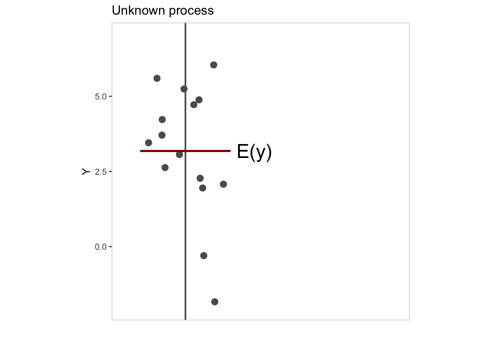
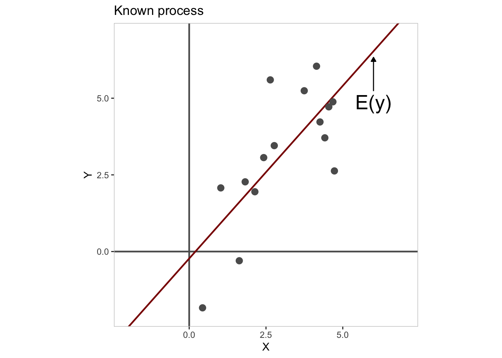
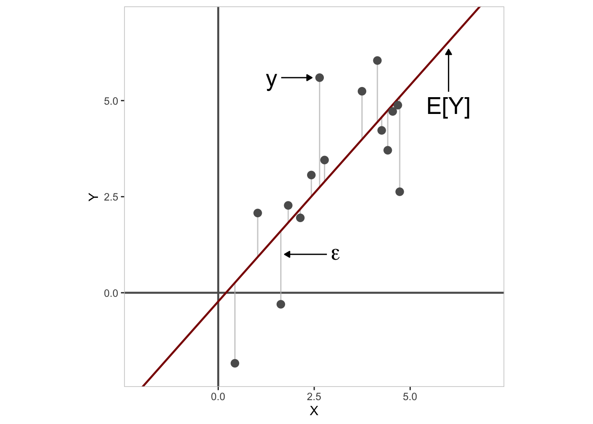

Chapter 12 Empirical Modeling
12.1 Overview
| Goal | To understand the process of empirical modeling. |
| tl;dr | |
| Outcomes |
Here, you will learn about
|
| Datasets | NONE |
| Requirements | NONE |
| Further Reading | NONE |
Empirical modeling is for scientists what inquiry is for the philosopher Charles Sanders Peirce, a process by which one moves from a state of doubt or uncertainty about some topic to one of belief, understanding, or certainty. For Peirce, this process is almost mechanical, like a reflex response to the irritation of a nerve. You find yourself stirred by the “irritation of doubt” to find a belief that puts your questioning mind to rest. For models, the process is strikingly similar. Uncertainty tugs on a model like a stretched spring, compelling it to settle on a state of energetic equilibrium.8 The objective, in either case, is to minimize uncertainty about some topic, as far as that is possible. In what follows, we’ll unpack this idea in more detail, starting first with the very idea of an empirical model.
12.2 Model components
Consider this innocuous scenario: a jar contains some number of marbles, which you are asked to estimate. Rather than thinking about how you might actually go about estimating the number of marbles here, let’s look at general features of the scenario itself, especially the two critical pieces of information it provides. First, the scenario indicates that the jar contains an actual - albeit unknown - number of marbles. This we will refer to as the outcome and denote \(y\). Second, we have your estimate of \(y\), or what we will call your expectation of \(y\)’s value and denote \(E[y]\). From these two variables, we can actually calculate a third, namely, the error in your estimate, which we denote by convention with the Greek letter \(\epsilon\) (epsilon). The error measures the difference between the actual or observed value of \(y\) and your expectation \(E[y]\).
Together, these three ingredients give us all the raw materials we need to define an empirical model. It boils down to this simple formula:
\[ y = E[y] + \epsilon \]
where, again,
- \(y\) is the outcome,
- \(E[y]\) is the expectation of \(y\), and
- \(\epsilon\) is the error.
In a manner of speaking, this formula decomposes your outcome variable - your data - into a more certain component (the expectation) and a less certain component (the error).
12.2.1 Outcome
The outcome, \(y\), is a random variable consisting of the value of each possible outcome or combination of outcomes in a sample space. Importantly, each numeric value has a probability of occurrence such that we can define the distribution of probabilities over all outcomes. This distribution is known as the probability distribution of the random variable.
For example, the sample space for a fair, six-sided dice would be the set {1, 2, 3, 4, 5, 6} and its probability distribution would be {1/6, 1/6, 1/6, 1/6, 1/6, 1/6}.
12.2.2 Expectation
, which we derive from our prior knowledge or understanding of the underlying process.
If we have no information about the underlying process, our

12.2.3 Error
, which we can characterize as the mismatch between our expectation and what we actually observe.
\[ \epsilon = y - E[y] \]
12.3 Model process
- Gather data (sample from outcome).
- Build model (describe property of sample).
- Compare model to alternatives (infer property of population).
12.3.1 Sampling
12.3.2 Describing
or, model building
12.3.3 Inferring

\[ \begin{aligned} y &= E(y) + \epsilon \\ E(y) &= mu \\ \epsilon &\sim N(0, sigma) \\ \end{aligned} \]
Joshua Loftus’ blog post on Least squares as springs actually gave me the idea for this analogy.↩︎